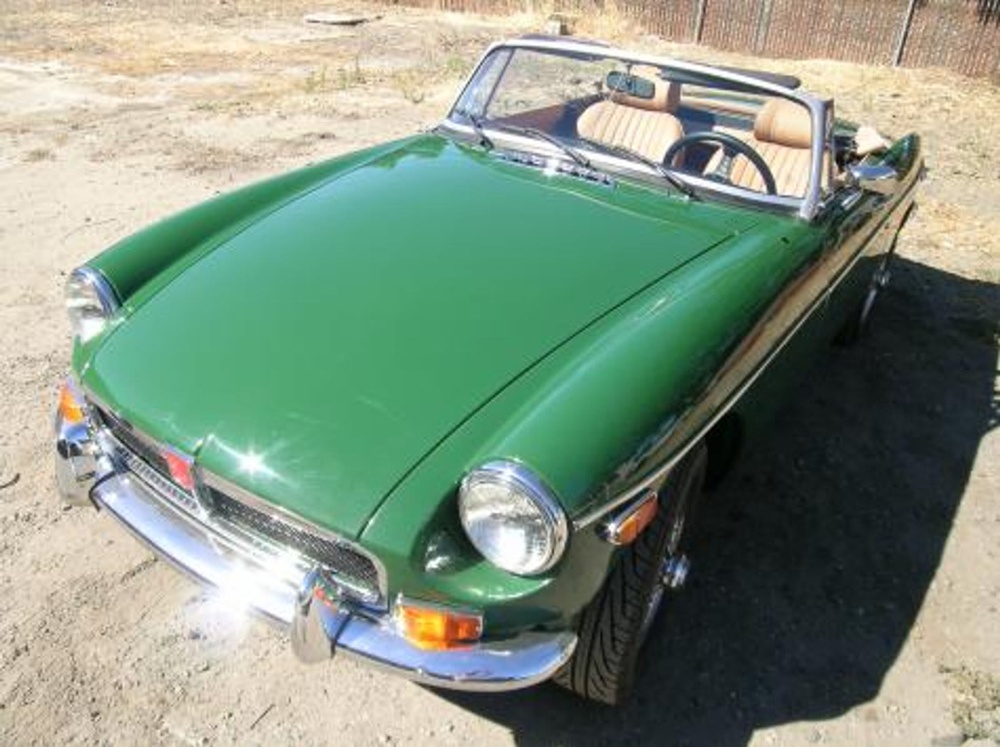

From the shop
MG restoration
Union Jack restores MGs — the T-series, MGA, MGB and MGB GT — in San Martin, California. The pre-war-style T cars are coachbuilding work on a timber frame; the MGB is a monocoque where the sills are structural and cover-sill shortcuts are expensive to undo.

What we take on
MGs are the cars we see most, which means we know where they go wrong and roughly what a job will take. The two families need completely different skills.
Every project starts the same way: we look at the car, then write an estimate and a stage-by-stage worksheet before any work begins. You decide what is worth doing.
- T-series
- TA, TC, TD and TF
- MGA
- 1500, 1600 and Twin Cam
- MGB
- Roadster and GT, chrome and rubber bumper
- Midget
- All years
What usually needs doing
Honest notes on where these cars go wrong, so you know what to look for before you buy one or bring it in.
- T-series bodies are built on woodTC, TD and TF bodies are framed in ash and panelled over. When the timber decays the body sags, doors drop and panel gaps open. You cannot fix that with metalwork; the frame has to be repaired or remade.
- MGB sills do the structural workThe MGB is a monocoque with no separate chassis. Inner sill, castle rail and outer sill together carry the car. Bolting a cover sill over rot is common and is the single most expensive thing to undo later.
- Rear arches, floors and front inner wingsThe usual MGB corrosion map. Worth establishing before purchase rather than after, which is why we offer pre-purchase inspections.
- MGA shape shows everythingThe MGA body sits on a separate frame and its curves reveal every ripple. Most of the labour in an MGA repaint is in the preparation, long before colour goes on.
MG work from the shop
The photograph above is a finished MGB. It is shop proof, not a claim about any one owner’s timeline.
MG questions
Straight answers, including the ones about cost.
Are MGB sills structural?
Yes. The MGB has no separate chassis, so the inner sill, castle rail and outer sill together carry the car's structure. Fitting a cosmetic cover sill over corroded inner structure is common on cars for sale and is expensive to put right properly.
Do MG TC, TD and TF bodies really have wooden frames?
They do. The body is framed in ash and panelled over a separate chassis. When the timber decays the body sags and the door gaps open, so the frame has to be repaired or remade rather than patched with metal.
What does an MGB restoration cost?
It depends almost entirely on the state of the sills, floors and rear arches. A sound car needing paint and mechanical work is a very different job from one needing structural steel. We assess the car and give a written estimate with a stage-by-stage worksheet.
Can you convert a rubber bumper MGB to chrome bumper?
Yes, and it is a common request. Done properly it also involves returning the ride height and suspension geometry to the earlier specification, not just changing the bumpers.
Other marques we restore
Bring us the car
Tell us what you have and what you want from it. We look at the car before quoting anything.